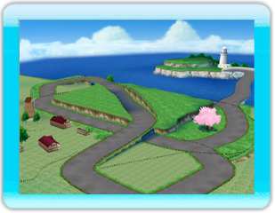
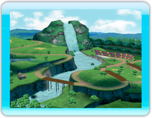
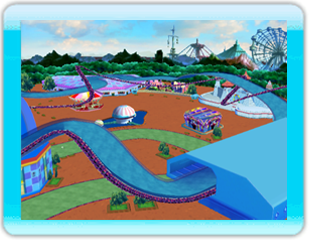

|

|
|
１．【おきらくレース場】
初級：フラワーロード
⇒カーブではインコースを攻めるといいかも？
中級：ハッピーアップダウン
⇒急なカーブがあるけど、うまく曲がれるかな？
上級：フライハイウェイ
⇒ジャンプ台で、ハイウェイまでひとっ跳び！
凸二 凸三 凸二 凸三 凸三 凸三
|
|
|

|
|
２．【カチコチ氷の国】
初級：カチコチレイク
⇒氷の割れた所に落ちてしまうとコースアウト！
中級：ドキドキトンネル
⇒山を登ると雪のトンネルにはいるよ！
上級：スノーゲレンデ
⇒ゲレンデをのぼって、一気に駆け下ります。
凸三 凸二 凸三 凸一 凸三 凸三
|
|
|

|
|
３．【ドキドキの森】
初級：カントリーロード
⇒カーブばかりだけど、うまく操縦できるかな？
中級：ラビットサーキット
⇒ウサギの形をしたコースだよ。耳は急カーブ！
上級：ダウンヒルリバー
⇒ジャンプ台で山の頂上に跳んで、山道を攻略！
凸三 凸二 凸三 凸三 凸三 凸二
|
|
|

|
|
４．【ワクワクゆうえんち】
初級：ワールドバザール
⇒ショッピングモールの中を駆け抜けよう！
中級：メリーゴーラウンド
⇒いろいろ回るけど、目だけは回さないようにね！
上級：ゴーゴージェットコースター
⇒ジェットコースターと一緒に、空を走りぬけ！
|
|